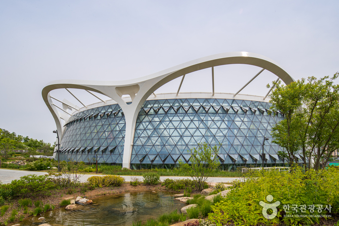
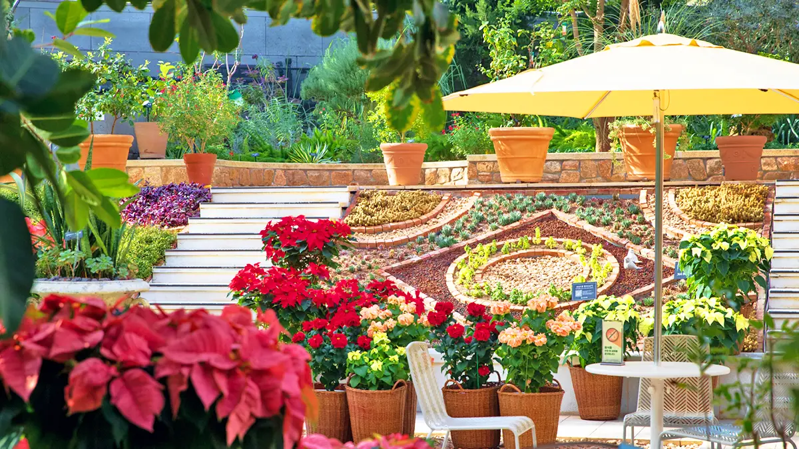
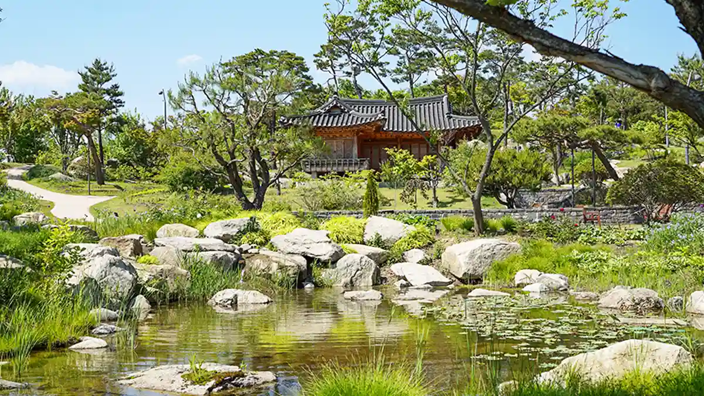
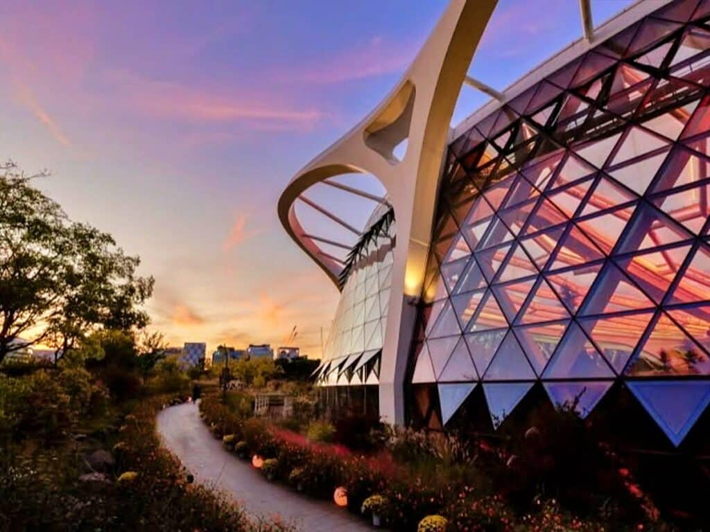
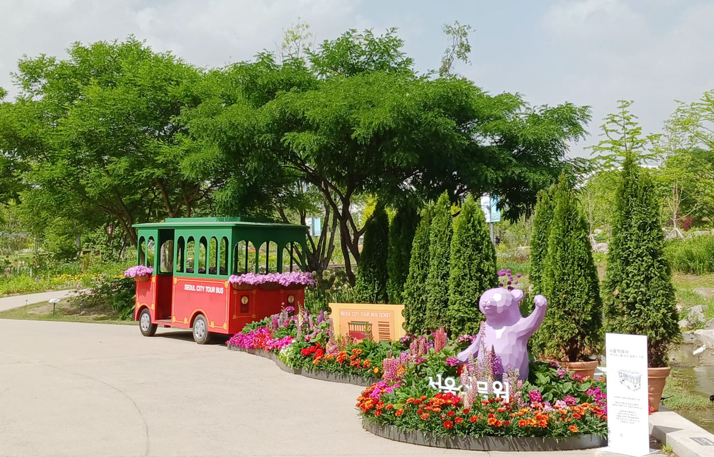
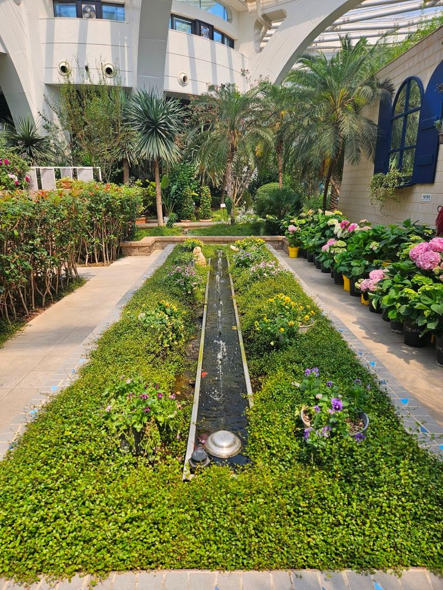

서울 식물원 소개
서울식물원은 서울특별시 강서구 마곡지구에 조성된 도심 공원이자 생태원이다.

서울 식물원 주제원 전경
식물원 이모저모
- 주소
- 서울특별시 강서구 마곡동로 161
- 개원일
- 2019년 5월 1일
- 면적
- 504,000m2
- 관람시간
- 주제원(주제정원, 온실, 마곡문화관): 09:30~18:00(월요일 휴관)
매표마감: 17:00
열린숲, 호수원, 습지원: 상시 개방
- 전화번호
- 02-2104-9716
갤러리




